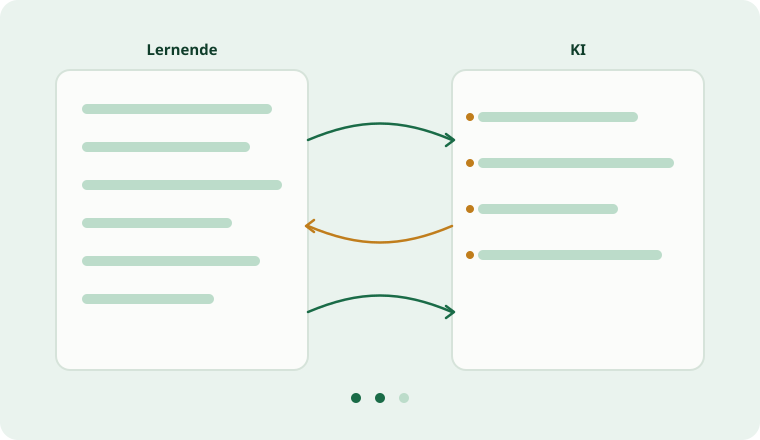

Medienpädagogischer Tag
KI im Unterricht. Und KI für euch.
Ein Tag in zwei Hälften: vormittags mit den Lernenden, nachmittags für die eigene Arbeit.

Willkommen
Das ist euer Portal für den Tag. Aufträge, Hilfen und Bausteine zum Kopieren stehen alle hier. Ausdrucken müsst ihr nichts, macht die Seite einfach am Gerät auf.
08:30 bis 12:00
Vormittag
KI mit der Klasse. In fachaffiner Kleingruppe baut ihr ein Ping-Pong-Szenario im fobizz-Klassenraum.
13:00 bis 16:00
Nachmittag
KI für euch. Mit Gemini und NotebookLM baut jede Gruppe ein vorzeigbares Material.
Der Tag im Überblick
08:30Ankommen und Überblick
09:00Einführung in fobizz
09:30Pause, Gruppen bilden
09:45Arbeitsphase I, Ping-Pong bauen
11:30Reflexion I, Ergebnisse zeigen
12:00Mittagspause
13:00Input, Material erstellen mit KI
13:45Arbeitsphase II, Gemini und NotebookLM
15:30Reflexion II, Abschluss